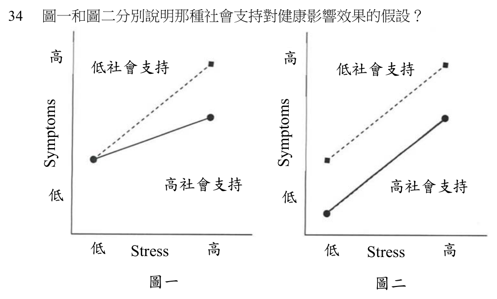

104 年第 1 次臨床心理師臨床心理學特論（三）試題與答案
這一頁是民國 104 年第 1 次臨床心理師臨床心理學特論（三）的整份歷屆試題，共 40 題，題目與標準答案出自考選部「國家考試試題及測驗式試題答案」開放資料，其中 40 題附有詳解。以下逐題列出題幹、選項與答案；要計時作答或記錄成績，請用線上練習。
考選部原始場次代碼：1
線上作答這一科 →
全部 40 題
第 1 題
那一種神經傳導物質與進食帶來的欣快感有關？
- （A）多巴胺
- （B）血清素
- （C）GABA
- （D）乙醯膽鹼
答案：（A）
詳解與考點
正解：題眼在「進食帶來的欣快感」——判準是進食獎賞與愉悅經驗所涉及的神經傳導物質。多巴胺參與獎賞預期、動機與愉悅相關歷程，故選 A。
B：血清素與飽足、情緒及食慾調節有關，但不是本題所指欣快感的主要答案。
C：GABA 主要是抑制性神經傳導物質，不能以其作為進食欣快感的核心解釋。
D：乙醯膽鹼參與注意與自主神經等功能，非本題的獎賞訊號。
本題考點：獎賞系統（reward system）——多巴胺（dopamine）參與動機與獎賞；食慾調節涉及多種傳導物質，題幹若問欣快與獎賞應優先辨識多巴胺。
第 2 題
依據 Minuchin 等人（1975）的研究，發現如果孩子發展成飲食障礙症，下列那一項不是此類疾患的家庭 常有的特性？
- （A）過度保護
- （B）僵化
- （C）缺乏衝突的解決
- （D）過度忽略
答案：（D）
詳解與考點
正解：題眼在 Minuchin 等人研究與「不是」——判準是該家庭系統觀點所描述的飲食障礙症家庭互動型態。過度保護、僵化與衝突處理困難是其描述中的典型特性；過度忽略不是該模式的核心，故選 D。
A：過度保護符合該家庭系統描述，故非答案。
B：僵化指家庭規則與角色缺乏彈性，符合題述模式。
C：衝突未能有效解決也是該觀點的常見特徵，故非答案。
本題考點：飲食障礙症家庭系統觀點（family systems perspective）——Minuchin 模式強調糾結、過度保護、僵化與衝突迴避；這是理論描述，不能單獨用來判定個案病因。
第 3 題
下列何者不是飲食障礙症之危險因子？
- （A）肥胖
- （B）對自己體型不滿意
- （C）專注於消瘦
- （D）喜歡美食
答案：（D）
詳解與考點
正解：題眼在「不是危險因子」——判準是該特質是否會提高體重／體型過度評價、節食壓力或飲食失控的風險。肥胖、體型不滿意與專注消瘦都與飲食障礙症風險相關；單純喜歡美食不是危險因子，故選 D。
A：肥胖可能帶來體重污名、節食與體型壓力，因而與風險相關。
B：對體型不滿意是飲食障礙症的重要認知風險。
C：過度專注消瘦會強化限制飲食與體型過度評價，故非答案。
本題考點：飲食障礙症危險因子（risk factors for eating disorders）——體型不滿意（body dissatisfaction）與消瘦理想化（thin-ideal internalization）是重要認知風險；正常的食物喜好本身不是病理指標。
第 4 題
依據 DSM-5 暴食症的診斷準則，暴食的頻率為何？
- （A）每週至少一次，為期三個月
- （B）每週至少二次，為期三個月
- （C）每週至少三次，為期二個月
- （D）每週至少二次，為期二個月
答案：（A）
詳解與考點
正解：題眼在 DSM-5「暴食症」的頻率——判準是暴食與不當補償行為的最低頻率及持續時間。依 DSM-5，兩者平均每週至少一次、持續 3 個月，故選 A。
B：每週至少二次把最低頻率提高，較接近舊版準則的記憶，非 DSM-5。這是最強誘答，因為它保留了 3 個月卻把版本敏感的頻率記成舊規則。
C：每週三次且僅 2 個月，頻率與期間都不符。
D：每週二次、2 個月同樣不符合 DSM-5 的規定。
本題考點：暴食症（bulimia nervosa）——DSM-5 的頻率與持續時間須一起判讀；暴食（binge eating）及不當補償行為皆是診斷核心；版本差異是常見誘答。
第 5 題
有關暴食症的敘述，下列何者錯誤？
- （A）壓力及負向情緒常是誘發因子
- （B）暴食症的典型飲食是蛋糕、冰淇淋等甜食
- （C）嚴格限制去接觸渴望想吃的食物，能有效減少暴食行為
- （D）暴食時的感受通常是羞恥及懊惱
答案：（C）
詳解與考點
正解：題眼在「暴食症」與「錯誤」——判準是暴食的限制—失控循環。過度嚴格限制渴望食物常增加剝奪感與後續失控風險，不能有效減少暴食，故選 C。
A：壓力與負向情緒常是暴食前的誘發因子，故非答案。
B：高可口性的甜食常出現在暴食內容中，故此敘述符合典型臨床描述。
D：暴食後常伴隨羞恥、罪惡或懊惱感，故非答案。
本題考點：暴食循環（binge-restrict cycle）——負向情緒與壓力可觸發暴食；嚴格飲食限制常維持問題而非解決問題；羞恥感是暴食後常見的主觀經驗。
第 6 題
依據 DSM-IV-TR，如果一位女性雖然有正常月經，但同時符合厭食症的其餘診斷準則，較符合下列何種 診斷？
- （A）Eating Disorder NOS
- （B）Anorexia Nervosa, Restricting Type
- （C）Anorexia Nervosa, Binge-Eating/Purging Type
- （D）Diagnosis or Condition Deferred on Axis I
答案：（A）
詳解與考點
正解：題眼在 DSM-IV-TR、正常月經與「其餘厭食症準則」——判準是該版本將停經列為女性厭食症診斷條件之一。個案未符合停經條件，雖符合其餘準則，依 DSM-IV-TR 應歸為 Eating Disorder NOS，故選 A。
B：Anorexia Nervosa, Restricting Type 仍須符合該版本完整的厭食症診斷條件，正常月經使其不符。
C：Binge-Eating/Purging Type 除完整厭食症條件外，還涉及暴食或清除型態；題幹未提供這些條件。
D：題幹已有足以歸類的資訊，不是延後 Axis I 診斷的情況。
本題考點：DSM-IV-TR 的 Eating Disorder NOS——依題幹版本，未符合厭食症全部準則者可歸此類；現行 DSM-5 已移除停經要件，版本敏感題不可用現行規則回改舊題。
第 7 題
根據 Barlow 等人（2000）的研究，有關治療恐慌症的敘述，下列何者正確？
- （A）應優先進行藥物治療（drug treatment）
- （B）應優先進行心理處遇（psychological treatment）
- （C）應同時進行藥物治療（drug treatment）和心理處遇（psychological treatment）
- （D）可進行任何一種治療或處遇，因為效果相同
答案：（B）
詳解與考點
正解：題眼在 Barlow 等人研究與「治療恐慌症」——判準是題目指定研究對治療優先序的結論。依該研究脈絡，應優先進行心理處遇，故選 B。
A：藥物治療可為某些個案的處遇選項，但不能據此說研究主張一律優先藥物。
C：合併治療未必對每位個案都必須優先採用；這個選項看似周全，錯在把可能的治療安排當成研究支持的固定優先序。
D：不同處遇的效果與適用條件不宜概括為完全相同。
本題考點：恐慌症心理處遇（psychological treatment for panic disorder）——認知行為治療（cognitive behavioral therapy）是重要實證取向；藥物、心理處遇與合併治療的選擇須依題目指定研究與個案狀況判讀。
第 8 題
研究發現與恐慌症（panic disorder）最密切的大腦結構是那一區？而此區所釋放的何種物質觸發交感神經 系統的活動？
- （A）amygdala，norepinephrine
- （B）locus coeruleus，norepinephrine
- （C）locus coeruleus，serotonin
- （D）amygdala，serotonin
答案：（B）
詳解與考點
正解：題眼在「恐慌症」與「觸發交感神經系統」——判準是急性警覺反應的腦幹去甲腎上腺素系統。藍斑核（locus coeruleus）是去甲腎上腺素的重要來源，其活化可帶動交感神經相關的喚起反應，故選 B。
A：杏仁核（amygdala）確實參與恐懼條件化與威脅偵測，但題目問的是與恐慌症最密切、並由其釋放物質觸發交感神經活動的結構；此一結構—傳導物質配對應為藍斑核與去甲腎上腺素，故非答案。這是最強誘答——它用對了恐懼迴路的術語，錯在把杏仁核的功能與藍斑核的去甲腎上腺素系統混為一談。
C：藍斑核的主要相關傳導物質不是血清素（serotonin），此配對把傳導物質寫錯，故非答案。
D：此項同時將恐慌相關的主要腦幹結構與傳導物質配錯，故非答案。
本題考點：恐慌症（panic disorder）的神經生物學——藍斑核（locus coeruleus）與去甲腎上腺素（norepinephrine）關聯於急性喚起；杏仁核（amygdala）主要關聯威脅偵測與恐懼制約。
第 9 題
進行診斷時，若強迫症患者不能理解自己的強迫性意念或行為是過度或不合理的，則須註明其特性為何？
- （A）精神病型
- （B）病識感不佳
- （C）自我不協調
- （D）嚴重型
答案：（B）
詳解與考點
正解：題眼在「不能理解」自己的強迫意念或行為過度、不合理——這直接指向強迫症的病識感程度。個案若未能認識症狀的不合理性，診斷時應註明為病識感不佳，故選 B。
A：精神病型不是此處用來標示強迫症病識感的正式特性。病識感不佳不等於症狀必然屬精神病性，故非答案。
C：自我不協調（ego-dystonic）通常指個案感到想法或衝動與自身價值不符、因而痛苦；題幹特別問「不理解其過度或不合理」，判準是病識感，而非自我不協調，故非答案。
D：嚴重型只描述症狀負荷或功能受損程度，不能精確說明個案是否認知症狀不合理，故非答案。
本題考點：強迫症（obsessive-compulsive disorder）的病識感——能否辨識強迫意念或行為過度、不合理，是病識感（insight）的判準；病識感不佳不等同精神病性。
第 10 題
身體臆形症最常與下列何者共病？
- （A）恐慌症
- （B）懼曠症
- （C）轉化症
- （D）強迫症
答案：（D）
詳解與考點
正解：題眼在「身體臆形症」與「最常共病」——判準是其反覆關注外觀缺陷、檢查或遮掩行為，和強迫症譜系的重複思考與行為模式最接近。身體臆形症常與強迫症共病，故選 D。
A、B：恐慌症與懼曠症可與身體臆形症同時出現，但並非本題所問的最典型共病配對，故非答案。
C：轉化症的核心是神經功能症狀與心理因素的關聯，並非身體臆形症最常見的共病，故非答案。
本題考點：身體臆形症（body dysmorphic disorder）——核心為對自覺外觀缺陷的過度關注與重複行為；強迫症（obsessive-compulsive disorder）是重要且典型的共病疾患。
第 11 題
關於厭食症之心理治療，下列敘述何者錯誤？
- （A）恢復體重是重要目的
- （B）家人需要共同參與
- （C）調整患者身體意象之態度
- （D）治療初期的體重增加是預估長期療效之最佳指標
答案：（D）
詳解與考點
正解：題眼在「何者錯誤」與「治療初期的體重增加」——判準是短期體重回升雖屬必要的醫療與治療目標，卻不能單獨當成長期療效的最佳預測指標。厭食症的長期預後還涉及飲食行為、身體意象、共病、家庭互動與功能恢復，故 D 為應選項。
A：營養復原與恢復體重是厭食症處遇的重要目標，因低體重本身會危及身心功能，故非答案。
B：尤其在青少年個案，家人共同參與可協助支持進食、降低衝突並調整維持問題的互動，故非答案。
C：扭曲的身體意象與對體重增加的恐懼是厭食症的重要維持因素，調整其態度是心理治療的核心工作之一，故非答案。
本題考點：厭食症（anorexia nervosa）的心理治療——體重恢復是必要目標；家庭參與（family involvement）與身體意象（body image）是重要處遇面向；單一早期指標不能取代整體長期預後評估。
第 12 題
由於靜宜是一個罹病焦慮症患者，我們可以預期下列何者？
- （A）她經常去看不同醫生，所以能夠放心地相信自己的健康沒有問題
- （B）她很少去看醫生，但常研究自己的病
- （C）她經常去看不同醫生，雖經醫生說明，但依然持續擔心自己的健康
- （D）她只看幾個特定的醫生，因為她認為看多了也於事無補
答案：（C）
詳解與考點
正解：題眼在「罹病焦慮症」與「雖經醫生說明，依然持續擔心」——判準是對罹患嚴重疾病的持續恐懼，不會因正常檢查或醫師保證而穩定解除。反覆求醫與尋求保證後仍持續擔心，最符合罹病焦慮症，故選 C。
A：反覆看不同醫師可能出現，但題幹所稱「能夠放心相信健康沒有問題」與罹病焦慮症不符；其保證效果通常短暫，故非答案。
B：有些個案會迴避就醫並反覆查詢健康資訊，但「很少看醫生」不是本題最具代表性的預期表現，故非答案。
D：將求醫固定在少數醫師且認為多看無用，不足以呈現健康焦慮在保證後仍被維持的核心模式，故非答案。
本題考點：罹病焦慮症（illness anxiety disorder）——核心為罹患嚴重疾病的持續擔憂；反覆求醫與尋求保證（reassurance seeking）只能暫時減輕焦慮，不能形成穩定安心。
第 13 題
有關轉化症（conversion disorder）的治療敘述，下列何者錯誤？
- （A）對心理處置的成效缺乏嚴謹控制之研究
- （B）利用溫和、支持的態度可減低個案對失能問題的關注
- （C）個案研究建議，應該試著讓個案了解轉化症狀是心理因素所引起
- （D）個案研究建議，對個案的任何進步應該給予增強
答案：（C）
詳解與考點
正解：題眼在「何者錯誤」與「讓個案了解症狀是心理因素所引起」——判準是功能性神經症狀的處遇須以支持、功能恢復與避免對抗為先，不能強迫個案接受單一心理歸因。直接要求個案承認症狀由心理因素造成，容易引發被指為裝病或症狀不真實的感受，反而破壞治療合作，故 C 為應選項。
A：轉化症的心理處置研究確有方法學限制，不能據此宣稱已有大量嚴謹控制研究，故非答案。
B：溫和支持的會談態度有助於降低個案對失能的過度聚焦，並維持治療聯盟，故非答案。
D：對功能改善與適應性行為給予增強，符合復健與行為處遇中強化進步的原則，故非答案。
本題考點：轉化症（conversion disorder）處遇——支持性介入（supportive intervention）與功能恢復優先；症狀的心理社會脈絡可探索，但不可用對抗方式強加歸因；正向增強（positive reinforcement）可支持功能進步。
第 14 題
依據 DSM-IV-TR，下列何者的診斷標準中不包含解離症狀（dissociative symptom）？
- （A）schizophrenia
- （B）acute stress disorder
- （C）posttraumatic stress disorder
- （D）somatoform disorders
答案：（A）
詳解與考點
正解：題眼在「DSM-IV-TR」與「不包含解離症狀」——判準是比較各疾患的診斷準則是否把解離列為核心或可出現的症狀。思覺失調症的診斷核心是妄想、幻覺、解組織等精神病性症狀，並不以解離症狀為診斷要件，故選 A。
B：急性壓力疾患在 DSM-IV-TR 的診斷架構中包含解離症狀，故非答案。
C：創傷後壓力症候群可呈現解離性反應，題目所依的 DSM-IV-TR 架構將其納入相關症狀考量，故非答案。
D：身體型疾患中包含與解離現象相近或相關的疾患分類脈絡，不能作為本題「不包含」的答案，故非答案。
本題考點：DSM-IV-TR 的解離症狀（dissociative symptom）——急性壓力疾患（acute stress disorder）與創傷後壓力症候群（posttraumatic stress disorder）需留意解離表現；思覺失調症（schizophrenia）以精神病性症狀為核心。
第 15 題
當自我感消失症狀出現在下列那一病程中時，不需要給予自我感消失症之診斷？
- （A）原發性失眠症
- （B）社交恐懼症
- （C）轉化症
- （D）暴食症
答案：（B）
詳解與考點
正解：題眼在「自我感消失症狀」與「不需要另給診斷」——判準是該症狀是否只在另一主要疾患的病程中出現，且不構成獨立臨床焦點。自我感消失可伴隨焦慮疾患發生；若它僅出現在社交恐懼症的病程中，應以主要焦慮問題加以處遇，而非另診斷自我感消失症，故選 B。
A：失眠雖可造成疲憊與疏離感，但不是本題所指的典型排除情境，故非答案。
C：轉化症的核心是神經功能症狀，不能僅因同時出現自我感消失便當成本題的標準排除配對，故非答案。
D：暴食症的核心為反覆暴食及相關失控經驗，非自我感消失症狀在他疾患病程中不另診斷的典型情境，故非答案。
本題考點：自我感消失（depersonalization）——須區分獨立的解離性問題與伴隨其他疾患的暫時症狀；社交恐懼症（social phobia）病程中的自我感消失應優先依主要焦慮疾患理解。
第 16 題
一位自小受到父親暴力對待的孩子長大之後不記得任何與父親有關的事情，依據 DSM-IV-TR，此種記憶 問題屬於：
- （A）侷限性失憶（localized amnesia）
- （B）選擇性失憶（selective amnesia）
- （C）系統性失憶（systematized amnesia）
- （D）連續性失憶（continuous amnesia）
答案：（C）
詳解與考點
正解：題眼在「不記得任何與父親有關的事情」——失憶範圍是以特定人物及其相關內容為組織原則，而不是一段時間或部分事件。依 DSM-IV-TR 的分類，這種圍繞特定人或類別的失憶屬系統性失憶，故選 C。
A：侷限性失憶（localized amnesia）是遺忘特定創傷事件周邊的一段時間；題幹界定的是「父親」這個主題範圍，不是時間區段，故非答案。
B：選擇性失憶是只能記得同一時段或事件的部分內容；題幹是整個特定人相關資訊都遺忘，故非答案。
D：連續性失憶是從某一時點起持續無法形成或提取後續記憶，與題幹回溯性、主題性的遺忘不符，故非答案。
本題考點：解離性失憶（dissociative amnesia）的型態——侷限性失憶按時間區段遺忘；選擇性失憶遺忘部分內容；系統性失憶（systematized amnesia）按特定人、事物或類別遺忘。
第 17 題
由於神經傳導物質在鬱症（major depressive disorder）扮演的角色證據並不一致，因此Kring 等人（2010）認為 目前研究轉向下列何者？
- （A）特定性濃度的神經傳導物質對憂鬱的影響
- （B）找尋新的神經傳導物質
- （C）探討突觸間的分解酵素（enzyme）對神經傳導物質代謝的影響
- （D）探討神經傳導物質突觸後接收器（postsynaptic receptors）的敏感度
答案：（D）
詳解與考點
正解：題眼在「神經傳導物質證據並不一致」與「研究轉向」——判準是憂鬱症研究不再只問某一傳導物質多或少，而改問神經訊號如何被細胞接收與調節。突觸後接收器的敏感度會影響相同傳導物質訊號造成的反應，因此是較合適的研究方向，故選 D。
A：只尋找特定濃度，仍把問題限縮為單一傳導物質量的高低，未回應證據不一致所揭示的系統複雜性，故非答案。
B：找尋新的傳導物質仍是擴大「物質種類」的策略，不能直接處理訊號反應為何不同的問題，故非答案。
C：分解酵素會影響代謝，但本題所指的理論轉向更著重接收端對訊號的敏感度，故非答案。
本題考點：憂鬱症（major depressive disorder）的生物學研究——神經傳導物質濃度不足以完整解釋症狀；突觸後接收器敏感度（postsynaptic receptor sensitivity）與神經訊號調節是重要觀點。
第 18 題
根據 DSM-5 對持續性憂鬱症（persistent depressive disorder）的研究發現，下列何者正確？
- （A）持續性憂鬱症至少須具備兩項憂鬱症狀，且症狀消失不超過一個月，至少持續兩年
- （B）五年追蹤研究發現鬱症（major depressive disorder）較持續性憂鬱症更需住院、更易企圖自殺
- （C）五年追蹤研究發現持續性憂鬱症較鬱症（major depressive disorder）更易有生活功能障礙
- （D）十年追蹤研究有 32%以上持續性憂鬱症患者會經驗一次重鬱發作
答案：（C）
詳解與考點
正解：題眼在「五年追蹤研究」的比較結果——判準是把比較的方向與被比較的指標一起對回選項。追蹤研究比較持續性憂鬱症與鬱症的長期結果時，持續性憂鬱症因症狀慢性、病程綿長，在生活功能障礙上比鬱症更為明顯，C 的比較方向與指標都對得上，故選 C。
A：DSM-5 的持續性憂鬱症要求憂鬱心情至少持續兩年，其間不曾連續兩個月以上沒有症狀；A 把「兩個月」寫成「症狀消失不超過一個月」，數字不符，故非答案。
B：把較需住院、較易有自殺企圖歸給鬱症一側，方向與追蹤研究相反——長期不緩解所累積的失能與風險出現在持續性憂鬱症一側，故非答案。
D：此項改用十年期與 32% 的重鬱發作比例，年期與數值都不是本題所依五年追蹤研究的結論，故非答案。
本題考點：持續性憂鬱症（persistent depressive disorder）——病程要件為憂鬱心情至少兩年、其間不曾連續兩個月以上無症狀；慢性化的代價主要顯現在生活功能障礙（functional impairment），須與鬱症急性發作的症狀嚴重度分開評估。
第 19 題
Klein（2000）主張兩向度以有效區分目前的憂鬱症疾病分類，該兩個向度為：
- （A）憂鬱病性（melancholic）與失樂感（anhedonic）
- （B）憂鬱病性（melancholic）與嚴重度（severity）
- （C）慢性程度（chronicity）與嚴重度（severity）
- （D）慢性程度（chronicity）與失樂感（anhedonic）
答案：（C）
詳解與考點
正解：題眼在「Klein（2000）」與「兩向度」——題目要辨識該分類主張用何種座標同時描述憂鬱問題的持續時間與臨床負荷。慢性程度（chronicity）與嚴重度（severity）可將短暫或持久、較輕或較重的病程區分開來，故選 C。
A：憂鬱病性與失樂感都是症狀或表現特徵，不能形成題幹所指的病程分類兩個基本向度，故非答案。
B：憂鬱病性偏向特定臨床表現，無法替代慢性程度這一時間軸，故非答案。
D：失樂感可作為症狀觀察，但不是用以和慢性程度並列區分疾病分類的主要向度，故非答案。
本題考點：憂鬱症分類（depression classification）——慢性程度（chronicity）描述病程持續性；嚴重度（severity）描述症狀與功能受損負荷；兩者不可由單一症狀特徵取代。
第 20 題
下列何者不是慢性失眠患者常見的睡眠信念？
- （A）睡眠相對於其他生活當中的事務較不重要，必要時可以犧牲
- （B）睡不好對於身體健康有很大的影響
- （C）如果我睡不到 6 小時，我上班時就無法專心思考
- （D）我每天都必需要睡滿 7 個半小時才會感覺良好
答案：（A）
詳解與考點
正解：題眼在「不是」與「慢性失眠患者常見的睡眠信念」——判準是失眠維持認知通常把睡眠看得過度重要，並高估睡不好造成的立即災難。認為睡眠可輕易為其他事務犧牲，反而低估睡眠的重要性，故 A 為應選項。
B：把睡不好視為會對身體健康造成很大影響，反映對失眠後果的過度擔憂，是常見的失眠信念，故非答案。
C：將未睡滿某一時數直接等同無法專心，是僵化且災難化的睡眠後果預期，故非答案。
D：認為每天必須精確睡滿固定時數才會良好，反映對睡眠需要的僵化規則，故非答案。
本題考點：失眠的失功能性睡眠信念（dysfunctional beliefs about sleep）——常見模式包括高估睡眠後果、對睡眠控制的焦慮與僵化時數規則；並非輕忽睡眠的重要性。
第 21 題
小高是高三的學生，他的母親表示，他好像被「壞東西」附身，每隔一陣子就變得非常嗜睡，一天睡 18 個小時以上，醒來時會用手抓桌上的食物往嘴裡塞，還會動手摸身邊的女性，有時還好像有幻覺出現， 通常維持四、五天到兩、三週，之後又恢復正常。請依據 DSM-5，小高的狀況最可能是：
- （A）憂鬱症
- （B）克萊─李文症候群（Kleine-Levin Syndrome）
- （C）猝睡症（narcolepsy）
- （D）快速動眼睡眠行為障礙症（REM sleep behavior disorder）
答案：（B）
詳解與考點
正解：題眼在「週期性」、「每天睡 18 個小時以上」、「暴食、性衝動」及恢復正常——這組反覆發作的嗜睡、飲食與去抑制行為是克萊─李文症候群的典型臨床圖像。題幹所示症狀持續一段時間後完全緩解，最符合克萊─李文症候群，故選 B。
A：憂鬱症可有嗜睡與食慾改變，但無法充分解釋反覆短期發作、極端嗜睡、暴食與性衝動後恢復正常的組合，故非答案。
C：猝睡症以難以抗拒的睡眠發作等睡眠調節問題為主，並非題幹這種持續多日的週期性暴睡及行為改變，故非答案。
D：快速動眼睡眠行為障礙症主要是在睡眠中演出夢境行為，不會造成清醒期間的暴食、性去抑制與週期性長時間嗜睡，故非答案。
本題考點：克萊─李文症候群（Kleine-Levin syndrome）——反覆發作的過度嗜睡（hypersomnolence）、暴食與行為去抑制是辨識線索；須與猝睡症（narcolepsy）及情緒疾患的嗜睡鑑別。
第 22 題
根據 DSM-IV-TR 下列有關睡眠驚恐疾患（sleep terror disorder）的敘述，何者錯誤？
- （A）小孩比成人較容易發生
- （B）因為不容易自然緩解，所以必須儘速介入
- （C）部分抗憂鬱劑及鎮定劑可能有治療效果，但尚未有足夠實徵研究支持
- （D）可以在睡眠驚恐常發生的時間前約 30 分鐘短暫喚醒個案，以減少發生的次數
答案：（B）
詳解與考點
正解：題眼在「何者錯誤」與「睡眠驚恐疾患」——判準是其常見於兒童，通常隨發展而自然緩解，並非因不易緩解而必須儘速介入。B 把病程方向講反了，故為應選項。
A：睡眠驚恐疾患在兒童較常見，故非答案。
C：部分藥物可能在特定臨床情況下使用，但實徵支持有限；此敘述符合題幹所依教材的保留性說法，故非答案。
D：若發作時間規律，可在預期時間前短暫喚醒，以中斷睡眠週期並減少發作，是可考慮的行為策略，故非答案。
本題考點：睡眠驚恐疾患（sleep terror disorder）——常見於兒童且多可自然緩解；預期性喚醒（scheduled awakening）可用於發作時間規律者；用藥證據須審慎解讀。
第 23 題
依據 DSM-IV-TR，下列何種睡眠疾患的異常現象較常發生在快速動眼睡眠階段？
- （A）夢遊疾患（sleepwalking disorder）
- （B）睡眠驚恐疾患（sleep terror disorder）
- （C）夢魘疾患（nightmare disorder）
- （D）夜間恐慌發作（nocturnal panic attack）
答案：（C）
詳解與考點
正解：題眼在「快速動眼睡眠階段」——判準是夢魘多與生動夢境相關，較常出現在 REM 睡眠。夢魘疾患的異常現象因此較常發生於 REM，故選 C。
A：夢遊疾患通常發生於較深的非快速動眼睡眠，而非 REM，故非答案。
B：睡眠驚恐疾患亦多發生在非快速動眼睡眠的深睡期，故非答案。
D：夜間恐慌發作可在睡眠中突然出現，但不以 REM 階段為其典型判準，故非答案。
本題考點：睡眠階段與異睡症（parasomnia）——夢魘疾患（nightmare disorder）較常發生於 REM 睡眠；夢遊與睡眠驚恐較常發生於非快速動眼睡眠。
第 24 題
有關生理回饋（biofeedback）的敘述，下列何者錯誤？
- （A）病患可透過生理回饋訓練來改善身體功能，其原理源自於操作制約
- （B）在典型的生理回饋訓練過程中，病患可透過專注、調整呼吸，來達到降低心跳、消除緊張等功能
- （C）以生理回饋來控制疼痛，研究證據顯示雖能達到效果，但效果有限
- （D）生理回饋的缺點在於，病患必須持續依賴生理回饋儀器來控制身體功能，而無法學習如何自行控制
答案：（D）
詳解與考點
正解：題眼在「何者錯誤」與「持續依賴儀器、無法自行控制」——判準是生理回饋的目的在協助病人辨識並練習調節生理反應，最終把控制技能帶離儀器情境。D 把訓練手段誤當成永久依賴，故為應選項。
A：生理回饋透過立即回饋與增強，協助病人學習調整可觀察的生理反應，與操作制約原理相符，故非答案。
B：在訓練中運用注意力與呼吸調節以降低心跳、減輕緊張，符合生理回饋的實務運用，故非答案。
C：生理回饋可用於疼痛處遇，但效果大小與適用情境須審慎評估；將其描述為有效但有限，並非本題的錯誤敘述，故非答案。
本題考點：生理回饋（biofeedback）——運用即時生理訊號與操作制約（operant conditioning）訓練自我調節；治療目標是內化控制技能，而非持續依賴儀器。
第 25 題
女性性冷感屬於人類性反應週期中那一期的疾患？
- （A）性慾望期（desire phase）
- （B）性興奮期（excitement phase）
- （C）性高潮期（orgasm phase）
- （D）性消退期（resolution phase）
本題送分，無標準答案
詳解與考點
本題經考選部公告一律給分。「性冷感」一詞在中文臨床用語中並非精確診斷名詞，常同時被用以指涉性慾低落與性喚起（興奮）障礙，故(A)性慾望期與(B)性興奮期兩種歸類在教材與臨床習慣用語上皆可成立，形成分類爭議。(C)性高潮期對應早發性高潮相關障礙、(D)性消退期無對應臨床意義，均可排除。作答以現行性心理學人類性反應週期分期為準。
第 26 題
性別認同疾患（gender identity disorder）在 DSM-IV-TR 中最受到爭議的最主要原因為何？
- （A）在動物世界中有許多會扮演異性角色及行為的物種
- （B）男女性別角色的界線已經越來越模糊
- （C）性別認同疾患是生理疾病而非心理疾患
- （D）性別認同疾患只是性別歧視的犧牲者
答案：（A）
詳解與考點
正解：題眼在「DSM-IV-TR」、「最受到爭議」與「最主要原因」——本題依命題當時教材脈絡，爭點在於把跨性別或性別角色多樣性病理化時，診斷界線缺乏充分的自然與功能失調判準；（A）以動物界可見異性角色或行為為例，直接挑戰把此類表現本身視為疾病的基礎，故選 A。此題屬舊版診斷概念與爭議性論述，應依 DSM-IV-TR 的命題語境辨析。
B：性別角色界線變得多元是重要社會背景，但不能單獨構成本題所問、最直接挑戰病理化基礎的論證，故非答案。
C：爭議不是把它界定為生理疾病或心理疾患二選一，而是診斷分類是否將性別多樣性不當病理化，故非答案。
D：性別歧視可加重少數群體遭遇的污名，但這是對後果的批判，非本題教材指定的主要爭議依據，故非答案。
本題考點：性別認同疾患（gender identity disorder）的診斷爭議——舊版 DSM 分類須放回歷史脈絡理解；病理化（pathologization）與性別角色多樣性（gender-role diversity）的界線是核心問題；現行 DSM-5 使用性別不安（gender dysphoria）概念。
第 27 題
王強穿上太太的內衣才能激發性慾，依據 DSM-IV-TR，王強最可能的診斷是：
- （A）戀物癖（fetishism）
- （B）扮異性戀物癖（transvestic fetishism）
- （C）性別認同疾患（gender identity disorder）
- （D）觸磨癖（frotteurism）
答案：（B）
詳解與考點
正解：題眼在「穿上太太的內衣才能激發性慾」——性興奮的關鍵不是物品的一般感官特質，而是自己穿著傳統上與另一性別相關的服飾。依 DSM-IV-TR 的用語，這符合扮異性戀物癖，故選 B。
A：戀物癖著重由非生命物品本身獲得性興奮；題幹特別強調穿著配偶內衣以扮演另一性別的服飾角色，較符合（B）扮異性戀物癖，故非答案。這是最強誘答——兩者都涉及衣物，關鍵差別在興奮是否以扮異性穿著為必要條件。
C：性別認同疾患涉及持續的性別認同困擾，不能只由特定服飾引發性興奮推論，故非答案。
D：觸磨癖的核心是在未同意者身上觸摸或摩擦以獲得性興奮，與題幹不符，故非答案。
本題考點：DSM-IV-TR 的扮異性戀物癖（transvestic fetishism）——以穿著異性服飾引發性興奮為辨識線索；須與戀物癖（fetishism）、性別認同疾患（gender identity disorder）及觸磨癖（frotteurism）區分。
第 28 題
下列有關性偏好症（paraphilic disorder）心理成因的敘述，何者錯誤？
- （A）心理動力的觀點認為戀物症的主要成因是閹割焦慮
- （B）心理動力的觀點認為暴露症的重要成因之一是消除自己對男子氣概疑慮的防衛機制
- （C）行為理論的觀點認為戀物症的主要成因是模仿學習
- （D）行為理論的觀點認為暴露症的重要成因之一是社交技巧不足
答案：（C）
詳解與考點
正解：題眼在「何者錯誤」與「行為理論的觀點」——判準是行為取向通常以古典制約、操作制約與早期性興奮經驗的連結來解釋性偏好，而不是以觀察他人後直接模仿作為戀物症的主要成因。因此 C 將戀物症主要歸於模仿學習，故為應選項。此題涉及病因理論的教材性歸納，實際個案的形成機轉不能由單一理論斷定。
A：心理動力取向確曾以閹割焦慮解釋戀物症，屬該取向的傳統理論說法，故非答案。
B：心理動力取向可將暴露行為理解為對男子氣概疑慮的防衛性處理，屬該理論脈絡，故非答案。
D：行為取向可將社交技巧不足視為暴露行為可能的維持或相關因素之一，故非答案。
本題考點：性偏好症（paraphilic disorder）的病因理論——心理動力觀點（psychodynamic perspective）以無意識衝突與防衛理解症狀；行為觀點（behavioral perspective）較著重制約學習與行為維持因素；理論性解釋不等於個案診斷事實。
第 29 題
放鬆訓練（relaxation training）是壓力管理的方式之一，下列對於放鬆訓練的敘述，何者錯誤？
- （A）放鬆訓練不只有肌肉放鬆，冥想（meditation）與催眠（hypnosis）也是放鬆訓練的方式
- （B）放鬆訓練技巧可有效緩和心率、膚電傳導以及血壓等壓力反應
- （C）肌肉放鬆訓練是練習對自己的心跳加以控制，進而達到全身的放鬆
- （D）放鬆訓練可以有效的降低個體的焦慮感受
答案：（C）
詳解與考點
正解：題眼在「何者錯誤」與「肌肉放鬆訓練」——判準是漸進式肌肉放鬆透過覺察、緊繃再放鬆骨骼肌群來降低張力，不是直接控制心跳。心跳等自律神經反應可隨放鬆而改變，但不能把肌肉放鬆的操作目標倒置為控制心跳，故選 C。
A：冥想與催眠都可作為誘發身心放鬆的策略；放鬆訓練的範圍不只肌肉緊張與放鬆，故非答案。
B：放鬆練習可降低壓力相關的生理喚起，例如心率、膚電反應與血壓的升高，敘述正確。
D：放鬆訓練可減輕主觀焦慮與生理喚起，是壓力管理常用的非藥物介入，故非答案。
本題考點：放鬆訓練（relaxation training）——以降低生理喚起與焦慮為目的；漸進式肌肉放鬆（progressive muscle relaxation）——操作核心是肌肉張力的覺察與放鬆，不是心跳控制。
第 30 題
A 型行為組型（Type A behavior pattern）與下列那一種疾病的發生關聯性最強？
- （A）癌症
- （B）糖尿病
- （C）氣喘
- （D）冠狀動脈心臟病
答案：（D）
詳解與考點
正解：題眼在「A 型行為組型」與「關聯性最強」——判準是健康心理學中 A 型行為的敵意、急迫感與競爭性，和心血管風險的經典關聯。四項之中，冠狀動脈心臟病最符合此一研究脈絡，故選 D。
A：癌症的發生涉及多重生物、環境與生活因子，不能把它視為 A 型行為組型最具代表性的關聯疾病。
B：糖尿病與代謝、遺傳及生活型態有關，並非本題所問的經典 A 型行為關聯。
C：氣喘牽涉氣道發炎與過敏等機轉；壓力可能影響症狀，但不等於與 A 型行為組型具有最強的疾病關聯。
本題考點：A 型行為組型（Type A behavior pattern）——急迫、競爭與敵意等特質的組合；冠狀動脈心臟病（coronary heart disease）——健康心理學中與此行為組型最常連結的疾病結果。
第 31 題
培養規律運動的習慣，可促進一個人的健康。下列關於運動的敘述，何者錯誤？
- （A）規律運動與較低的壓力感受有關
- （B）規律運動可預防心血管疾病
- （C）人們不願從事運動的最常見理由是：覺得自己沒有病
- （D）自我效能（self-efficacy）較低的個體，較無法從事與維持運動
答案：（C）
詳解與考點
正解：題眼在「何者錯誤」與「不願從事運動的最常見理由」——判準是運動行為的障礙通常是時間、疲勞、動機、可近性或自我效能等，而非單純覺得自己沒有病。把「無病」當成最常見理由過度簡化健康行為的阻礙，故 C 為應選項。
A：規律運動常與較低的主觀壓力感受及較佳情緒調節有關，敘述正確。
B：規律運動有助降低心血管疾病風險，是健康促進的重要行為，故非答案。
D：自我效能低者較不相信自己能開始、完成並維持運動，因此較難長期從事運動，敘述正確。這是最強誘答的反面：不能只把運動困難歸於健康狀態，還要看個體對自己能否持續行動的信念。
本題考點：健康行為障礙（barriers to health behavior）——常涉及動機、資源與情境；自我效能（self-efficacy）——影響行為啟動與維持；規律運動（regular exercise）——與壓力降低及心血管健康有關。
第 32 題
關於醫病溝通的敘述，下列何者正確？
- （A）病患對於醫療「技術」的評價是客觀的，並不受到醫療者「態度」的影響
- （B）當病患知覺到其健康照護（health care）行為的決定完全受控於醫療者，而自己無法參與決定時，其醫 囑遵從的行為會降低
- （C）美國的健康維護組織（health maintenance organization，HMO）類似我國的健保制度，研究顯示，HMO 的制度提升了病患對醫療品質的滿意度
- （D）另類醫療（alternative medicine）會對醫療系統中的醫病關係產生負向的影響
答案：（B）
詳解與考點
正解：題眼在「自己無法參與決定」與「醫囑遵從」——判準是共享決策與自主感會影響病患的治療參與。若病患知覺決策完全由醫療者控制，容易降低認同與遵從，故選 B。
A：病患對醫療技術的評價並非完全客觀；醫療者的態度、溝通與信任關係會影響病患如何理解技術與照護品質。
C：HMO 與臺灣健保的制度設計及脈絡不能直接畫上等號，且不能概括推論此制度必然提升醫療品質滿意度。這是最強誘答，因為它利用了兩者都涉及醫療保險的相似性，錯在把制度類比與滿意度結論一併當成定論。
D：另類醫療不必然對醫病關係造成負向影響；關鍵在病患是否告知使用情形，以及醫療者能否以尊重且安全的方式討論。
本題考點：共享決策（shared decision-making）——病患參與可提升治療認同；醫囑遵從（adherence）——受自主感與醫病溝通影響；醫病關係（patient-provider relationship）——態度與信任會影響品質知覺。
第 33 題
Levy 等人（1990）研究指出，有較強社會支持的人會擁有較強的免疫功能，且在壓力下會有較小的免疫 功能損傷。這樣的研究結果說明，社會支持在健康上扮演何種角色？
- （A）中介角色（mediator）
- （B）調節角色（moderator）
- （C）直接效果（direct effect）
- （D）增加效果（incremental effect）
答案：（B）
詳解與考點
正解：題眼在「在壓力下會有較小的免疫功能損傷」——判準是社會支持改變壓力與免疫功能之間關係的強弱。它不是只和免疫功能並列相關，而是在壓力條件下緩衝免疫受損，故屬調節角色，選 B。
A：中介角色是指社會支持位於壓力與健康結果的因果路徑中，用來說明壓力何以影響健康；題幹強調的是不同支持程度下壓力效果不同，並非中介。
C：直接效果只表示社會支持本身預測免疫功能，未指出它會改變壓力效果的大小，無法完整解釋題幹。
D：增加效果不是此處描述變項交互作用的標準概念。
本題考點：調節變項（moderator）——改變兩變項關係的方向或強度；壓力緩衝模型（stress-buffering model）——社會支持可減弱壓力對健康的不利影響；中介變項（mediator）——用以解釋影響如何發生的路徑。
第 34 題
圖一和圖二分別說明那種社會支持對健康影響效果的假設？

- （A）緩衝假設；直接效果假設
- （B）直接效果假設；緩衝假設
- （C）緩衝假設；緩衝假設
- （D）直接效果假設；直接效果假設
答案：（A）
詳解與考點
正解：本題的題眼在兩張圖的低壓力端——看兩條線在壓力低的一端是否重合、以及兩線斜率是否相同，就決定各自對應哪一條假設。圖一中，低社會支持（虛線）與高社會支持（實線）在低壓力端交會於同一點，症狀（Symptoms）水準完全相同；壓力升到高的一端之後兩線才拉開，虛線陡升到很高，實線只緩緩上升。也就是說，社會支持的好處只在壓力大時才顯現，壓力小時看不出差別——這正是緩衝假設：支持像一層緩衝墊，壓力升高時削弱壓力對健康的衝擊，圖形上表現為壓力與社會支持的交互作用（兩線斜率不同、呈扇形張開）。圖二中，兩條線從低壓力端就已經分開，低社會支持那條的起點就高於高社會支持，而且兩線幾乎平行、斜率相近，落差在整段壓力範圍內大致維持不變。社會支持不論壓力高低都把症狀往下拉同樣的幅度，效果不依賴壓力水準，這是直接效果假設（又稱主效果）。故選 A。
B：把兩張圖的判定對調了。它認得出圖上有兩種不同型態，錯在指派方向——直接效果的圖形特徵是兩線平行、在低壓力端就已存在落差（圖二的樣子），緩衝的特徵則是低壓力端重合、到高壓力端才分岔（圖一的樣子），兩者不能互換。
C：把兩張圖都判成緩衝假設。圖二的兩線在低壓力端已有明顯差距且大致平行，讀不出「壓力越高、支持的保護作用越大」的交互作用，不符緩衝假設的圖形條件。
D：把兩張圖都判成直接效果假設。圖一的兩線在低壓力端交會於同一點，代表壓力低時有無支持並無差別，與主效果所要求的「支持的效果穩定存在、不隨壓力變動」不合。
本題考點：社會支持影響健康的兩條經典假設，差別在支持的效果是否依賴壓力水準，而這一點可直接從圖形讀出。直接效果（主效果）假設主張社會支持本身就有益健康，不論壓力高低都降低症狀，圖上是兩條有固定落差的平行線；緩衝假設主張支持是壓力與健康之間的調節變項，只有在高壓力情境下才發揮保護作用，圖上是低壓力端重合、高壓力端張開的交叉型態，統計上對應壓力與支持的交互作用項是否顯著。判讀這類交互作用圖的通則：先看基線（自變項最低處）兩條線是否重合，再看兩線是否平行；基線重合而後分岔＝條件性效果（緩衝），基線就分開且平行＝穩定的主效果。
第 35 題
因應型態（coping style）是指一個人面對壓力情境時，經常出現的特定因應方式，個人的因應型態：
- （A）主要決定於基因
- （B）主要由後天學習經驗塑造
- （C）主要決定於基因與後天經驗之交互作用
- （D）基因、後天學習及兩者之交互作用三者之影響力相同
答案：（C）
詳解與考點
正解：題眼在「因應型態」與「主要決定」——判準是面對壓力的穩定傾向並非單由基因或學習單獨決定，而是氣質、後天經驗與兩者互動的結果。C 同時保留先天差異與環境塑造，故選 C。
A：基因會影響氣質與反應傾向，但不能單獨決定一個人採取的因應型態。
B：後天學習會塑造因應策略，但忽略先天氣質及其與環境的交互作用，過度單因化。
D：基因、學習與交互作用不必具有相同影響力；各人、各壓力情境與不同發展階段的權重都可能不同。
本題考點：因應型態（coping style）——個體面對壓力時慣常採取的反應傾向；基因—環境交互作用（gene-environment interaction）——先天傾向與經驗共同形塑行為。
第 36 題
漸進式肌肉放鬆（progressive muscle relaxation）訓練是 Jacobson 在 1938 年提出，此一治療策略目的在：
- （A）增加個案對自身肌肉緊張度的覺察，並學會同時放鬆全身肌肉
- （B）增加個案對自身情緒緊張度的覺察，並學會同時放鬆全身肌肉
- （C）增加個案對自身肌肉緊張度的覺察，並學會放鬆特定部位的肌肉群
- （D）增加個案對自身情緒緊張度的覺察，並學會放鬆特定部位的肌肉群
答案：（C）
詳解與考點
正解：題眼在「漸進式肌肉放鬆」——判準是依序注意各肌肉群的緊繃與鬆弛，從而辨識身體張力並學會放鬆特定部位。它不是要求同時放鬆全身，也不是以情緒緊張度作為直接操作對象，故選 C。
A：錯在「同時放鬆全身」。漸進式肌肉放鬆的特徵是分部位、循序進行，藉比較緊繃與鬆弛的感覺建立覺察。
B、D：情緒可能隨肌肉放鬆而改善，但訓練直接覺察與操作的是肌肉張力，不是情緒緊張度，故皆非答案。
本題考點：漸進式肌肉放鬆（progressive muscle relaxation）——逐一肌肉群的緊繃與放鬆練習；身體覺察（body awareness）——辨識肌肉張力是放鬆訓練的起點。
第 37 題
生理回饋與放鬆訓練，同為壓力下的有效降低生理反應之治療技巧，兩者：
- （A）不可併用
- （B）可以合併使用
- （C）要有固定的操作順序
- （D）對任何人都有效
答案：（B）
詳解與考點
正解：題眼在「生理回饋與放鬆訓練」同為降低壓力生理反應的技巧——判準是兩者可互補：生理回饋提供可觀察的生理訊息，放鬆練習提供調節方法。因此可以合併使用，故選 B。
A：兩種方法的目標相容，沒有不可併用的原則。
C：介入安排可依個案問題、設備與治療目標調整，沒有一律固定的操作順序。
D：任何介入的效果都受個案狀態、練習投入與適配性影響；「對任何人都有效」是過度絕對化的說法。
本題考點：生理回饋（biofeedback）——回饋生理訊號以促進自我調節；放鬆訓練（relaxation training）——降低生理喚起的練習；整合介入（combined intervention）——可依個案需求搭配運用。
第 38 題
在臨床場域進行壓力衡鑑時，需考慮當事人對壓力事件的認知評估，這是指：
- （A）當事人將生活事件視為威脅或傷害的傾向
- （B）當事人壓力生活事件的多寡
- （C）當事人壓力感受大小
- （D）當事人面對或逃避的傾向
答案：（A）
詳解與考點
正解：題眼在「對壓力事件的認知評估」——判準是個體如何詮釋事件對自身福祉的意義，例如是否視為威脅、傷害或挑戰，而非事件數量或單純感受強度。A 正是這種對事件意義的判斷，故選 A。
B：壓力生活事件的多寡是客觀事件負荷，不等於當事人如何解讀事件。
C：壓力感受大小是認知評估後可能出現的主觀結果，並非認知評估本身。
D：面對或逃避屬因應反應；它可能受評估影響，但不是評估事件的意義。
本題考點：認知評估（cognitive appraisal）——判斷事件是否構成威脅、傷害或挑戰；壓力衡鑑（stress assessment）——須同時理解事件與個體的主觀詮釋；因應（coping）——面對評估後採取的反應。
第 39 題
Sarafino（2001）主張下列何種介入取向，可以有效使慢性疾病患者進行最佳的醫療決策與行為以及情緒 調適？
- （A）放鬆與生理回饋（relaxation and biofeedback）
- （B）認知方法（cognitive methods）
- （C）人際關係治療（interpersonal therapy）
- （D）家族治療（family therapy）
答案：（B）
詳解與考點
正解：題眼在「最佳的醫療決策與行為以及情緒調適」——判準是要同時處理慢性疾病個案的想法、決策、行為與情緒，認知方法可辨識並修正不適應信念、促進問題解決與自我管理，故選 B。
A：放鬆與生理回饋適合降低生理喚起與壓力，但較不足以直接處理醫療決策與疾病信念。
C：人際關係治療主要聚焦人際角色與關係困擾，不能作為本題所述全面醫療決策介入的最佳答案。
D：家族治療在家庭互動影響疾病調適時可能有用，但題幹所問的決策、行為與情緒整合，核心仍是認知層面的工作。
本題考點：認知方法（cognitive methods）——調整疾病相關信念與決策；慢性病自我管理（chronic illness self-management）——涵蓋治療行為與情緒調適；問題解決（problem solving）——將健康目標轉為可執行選擇。
第 40 題
操作制約方法應用於治療慢性疼痛時，較適合用於何種慢性疼痛？
- （A）慢性／反覆疼痛與慢性／良性疼痛
- （B）慢性／反覆疼痛與慢性／惡性疼痛
- （C）慢性／反覆疼痛與慢性／漸進式疼痛
- （D）慢性／良性疼痛與慢性／惡性疼痛
答案：（A）
詳解與考點
正解：本題問的是操作制約（operant conditioning）應用於慢性疼痛時的適用邊界——判準是該類疼痛的持續是否還受「疼痛行為被增強」所維持，而不是被持續惡化的病理歷程所驅動。操作取向處理的是求助、臥床、服藥與工作豁免等外顯疼痛行為受後果強化的循環，因此適用對象必須是病理穩定、不會進行性加重的疼痛：慢性／反覆疼痛（如偏頭痛、緊縮型頭痛，發作與緩解交替）與慢性／良性疼痛（如慢性下背痛，長期存在但無進行性病灶）正屬此類，故選 A。
B、C：兩者都把「慢性／反覆疼痛」這一半配對正確，錯在另一半。慢性／惡性疼痛（如癌症疼痛）與慢性／漸進式疼痛的共同特徵是病理持續進展、傷害性輸入隨病程增加，處遇重心在鎮痛與症狀控制，此時把削減疼痛行為當成目標會壓抑掉必要的求助訊號。分辨關鍵在疼痛背後的病理是穩定還是進展，不在疼痛持續了多久。
D：慢性／良性疼痛本身確實是操作取向的典型適用對象，但與慢性／惡性疼痛並列即不成立，理由同上。
本題考點：慢性疼痛的病程分類（chronic/recurrent、chronic benign、chronic progressive/malignant pain）與操作取向疼痛處遇（operant approach）的適用判準——操作制約處理的是被後果增強所維持的疼痛行為（pain behavior），適用於病理穩定的良性與反覆疼痛；病理持續進展的惡性疼痛以鎮痛與症狀控制為主。
其他年度
回到臨床心理師臨床心理學特論（三）的年度總覽，
或到臨床心理師題庫首頁看其他科目。
題目與標準答案出自考選部「國家考試試題及測驗式試題答案」開放資料。依中華民國《著作權法》第 9 條第 1 項第 5 款，
依法令舉行之各類考試試題不得為著作權之標的，得自由利用。詳解為 AI 整理的學習輔助，
並非官方標準答案；中華民國法規會修訂，引用前請對照現行版本查證。